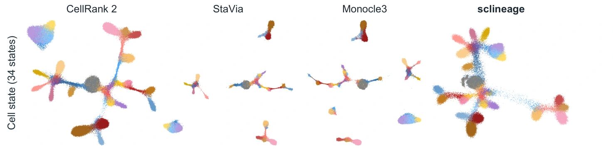

Learn continuous states
Encode expression variation into a continuous representation. Freeze the encoder before fitting the hierarchy.
x → zA shared hierarchical path connects cell-state organization, descendant fate and generation at unobserved times. Follow the evidence, from known synthetic lineages to real clonal descendants.
Follow the results ↗FIG. 1 · THE CONNECTING IDEA
The path describes a cell at several resolutions, supplies shared-prefix information for training pairs, and conditions generation. The source state anchors the start; the requested day sets the integration endpoint.
Encode expression variation into a continuous representation. Freeze the encoder before fitting the hierarchy.
x → zParent-consistent assignments give each cell a coarse-to-fine path. Shared prefixes also enter the hierarchy-aware OT pairing cost.
s = (c₁, …, cL)The velocity network receives the full path. Integration starts near an observed source state and ends at the requested biological stage.
dy/dt = vθ(y, t, s)INTERACTIVE METHOD VIEW
Choose a branch, then move through the integration. This conceptual animation shows how source state, path and time work together. The reported evidence follows in Figures 2–5.
An illustration of path conditioning. Experimental predictions are shown below.
CT34 is a synthetic branching benchmark with reference ancestry. Depth measures the resolution of the expression-derived hierarchy.
The 978-clone fate analysis fits expression representations using RNA from all three days and holds out clone groups for fate testing. The separate population-generation experiments exclude the target day from generator and preprocessing fitting.
Reported error bars measure technical training or resampling variation as specified in each source figure. Path-switching experiments measure model controllability. The pancreatic experiment uses a separately trained model.
First, can this organization recover state identity and developmental order?
FIG. 2 · STATES AND DEVELOPMENTAL ORDER
A useful representation must distinguish transcriptional states while preserving progression within a lineage. CT34 supplies reference states, developmental times and a known tree to test these properties separately.
Switch between reference state and developmental time for the same 100,000 cells. Separation of states and coherent progression along branches are different requirements.

Fit on 80,000 cells, assign 20,000 held-out cells. Move through the depth to see how broad groups become finer states.

Held-out NMI peaks at level 4: median 0.816 across five fits. At the same resolution and on the same representation, mean NMI is 0.819 for HTC and 0.779 for KMeans. More depth can split one reference state among several codes.
Within each of the 20 root-to-terminal lineages, graph distance is compared with reference developmental time. The frozen representation preserves ordering independently of the HTC depth sweep.
The separate Fig. 2c comparison shows a trade-off: Monocle3 leads the reported state-clustering scores, while sclineage leads correlations with developmental time. Cohort and grouping differences make those rankings descriptive.
Ordered states do not yet establish correct branches. Next, test the connections and shared ancestors.
FIG. 3 · CONNECTIVITY AND SHARED ANCESTRY
Having tested continuous state organization, we examine the discrete lineage structure: complete routes, branch connections and shared ancestors. Local examples are followed by repeated graph-level evaluations.
Region I contains two routes with a shared prefix. Both full sequences are recovered by sclineage. A shortcut such as S04 → S02 is a wrong directed transition even if the map looks locally connected.

Mean branch-localization F1 across five fits; CellRank 2: 0.428. sclineage also leads mean directed-edge and rooted-ancestry F1.
Terminal pairs share the exact reference ancestor group in the displayed skeleton. The remaining five admit compatible finer splits; all 13 non-trivial ancestor groups are retained.
The synthetic reference establishes structural accuracy. Clonal barcodes now provide an independent biological test.
FIG. 4 · RNA TO BARCODE-LINKED FATES
Clonal barcodes link early cells to observed mature descendants. RNA from all three days fits the representation; 70% of clone groups are reserved for fate testing.
Observed mature descendants are neutrophils.
Predicted from D2: 95.6% neutrophil fate.
Observed mature descendants are monocytes.
Predicted from D2: 78.0% monocyte fate.
These retrospectively selected examples illustrate the prediction. The tests below assess performance across held-out clone groups.
Native readouts test each complete method. A shared day-ordered readout tests the representations under the same prediction rule, across ten mature fates.
Fate agreement asks where descendants belong. The next test asks whether new expression states can be generated when an entire target day is withheld.
FIG. 5a–d · HELD-OUT TIME, PATH INPUT, SOURCE IDENTITY
Withhold D4 for interpolation, D6 for forward prediction, and D2 for backward reconstruction. Then ask what the full path contributes and whether the generated fates remain linked to their source clones.
Outlined target days are excluded from preprocessing and generator fitting. Branch-conditioned predictions are shown in the same UMAP of observed cells.
Hold hierarchy-aware OT coupling and network capacity fixed. Vary only the route input: no path, terminal code, or the complete multilevel path.
Training on D2 and D4. D6 is held out. Network capacity and coupling are fixed across the three variants.
Reported means · Fig. 5c and Supplementary Fig. S12
A correct population average can hide incorrect source-to-fate assignments. Shuffling complete predicted fate vectors between clones preserves the clone-averaged fate distribution while breaking the source correspondence.
375 test clones · 530 D2 sources. Mean TV: sclineage 0.441, scDiffEq 0.452, TIGON 0.511. Matching the correct source reduces TV by 30.78% relative to clone shuffling.
D6 is held out from generator training. A separate D6 readout is fitted using development clones; barcode-linked D6 descendants of the test clones are reserved for evaluation. The animated pairing is schematic.
Source correspondence is one requirement. The generated population must also cover the observed states and their biological differences.
FIG. 5e–f · POPULATION AND BIOLOGICAL FIDELITY
Mean expression, full distributions and state coverage probe different aspects of generation. The paper tests all three, then checks cell-type proportions and predefined lineage-related gene programs.
Across 2,002 genes, the displayed fit correlates with observed means at R = 0.989, 0.980 and 0.906 for D4, D6 and D2. These are seed-42 values; the benchmark below reports repeated-fit summaries.
sclineage leads 10 of 12 mean comparisons: all four metrics for D4 and D2, and recall plus MMD for D6. scDiffEq leads D6 Pearson R and SWD. Change the metric to see the trade-off.
Mean ± sample s.d. · Supplementary Fig. S11. All bar axes begin at zero.
A common 12-class readout evaluates cell-type proportions. Three predefined programs—Progenitor, Monocyte and Neutrophil—are assessed both by their mean scores and by the full distribution of cell scores.
sclineage has the lowest mean composition TV in each task, and the lowest mean score error and score-distribution Wasserstein distance for each program in each task.
A displayed composition example from Fig. S8a. Readout estimates are compared on the same scale.
FOLLOWING FIG. 5 · THREE FURTHER TESTS
The Results then tighten the generative baseline, isolate the requested path, and move to a second developmental system. Each extension answers a different remaining question.
Higher mean Pearson R, precision and recall; lower SWD and MMD, across all three tasks against matched OT-CFM.
The largest recall improvement occurs in D6 forward prediction. Three technical seeds per condition and task.
S15 · SAME SOURCE, NOISE AND TARGET DAY
Fix 530 D2 sources, initial noise and the D6 target. Change only the requested path. Full path input gives 98.74% neutrophil and 99.55% monocyte target-hit rates with hierarchy-aware OT. Without path input, the paired predictions do not change.
The switching effect is 99.02 ± 0.14 percentage points across three technical seeds. Expression-only OT also supports strong switching with full path input. This tests model controllability.
Fit each model independently on E13.5 and E14.5, then predict E15.5. sclineage reaches 78.24% mean recall, 55.52 percentage points above the stronger baseline, and the lowest mean MMD. This extends forward prediction to a second biological system.
CONTINUE EXPLORING
sclineage integrates hierarchical lineage inference with conditional cell-state generation
Interactive companion to the manuscript. Code and preprint links will be added with the public release.